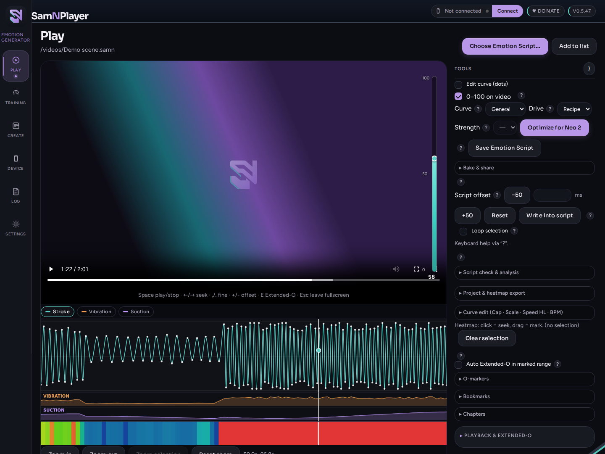
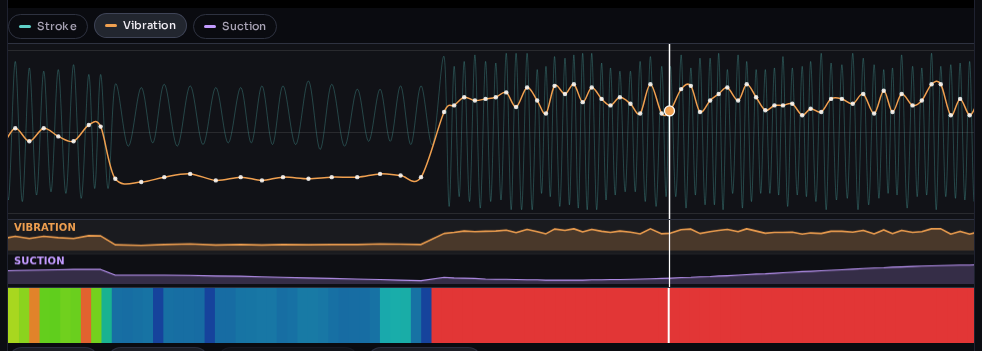
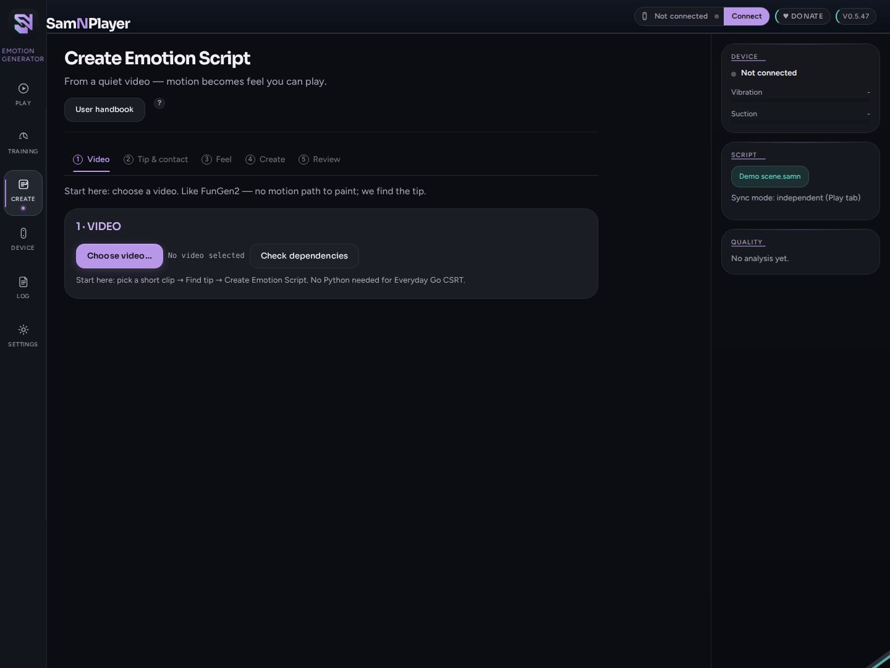
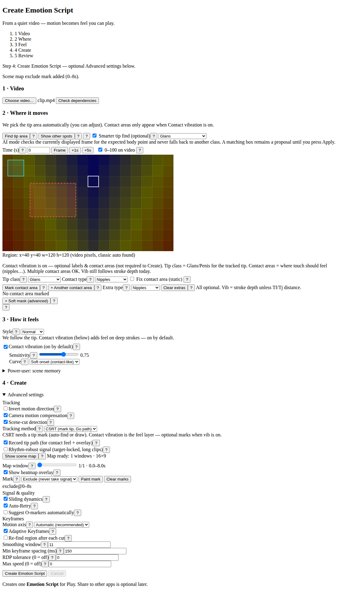
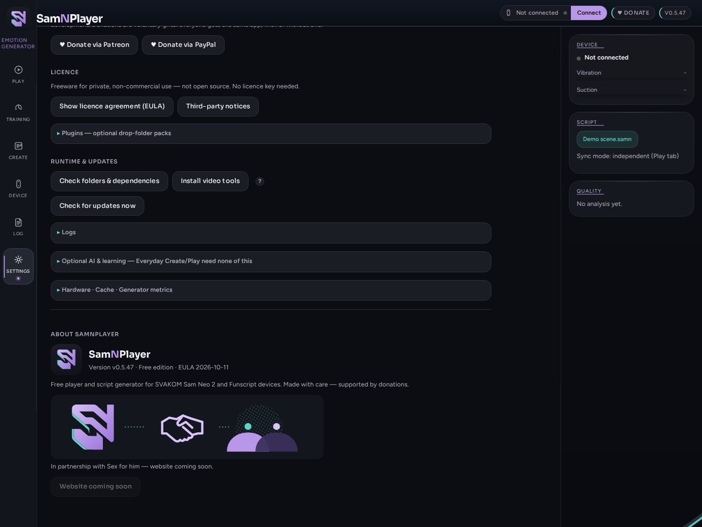

SamNPlayer
SamNPlayer
Generate · Play · Train
One local desktop app for .samn / .funscript
and SVAKOM Sam Neo 2 — measured scripts, first-class device control,
optional on-device AI that never writes alone.
Why this app
Most tools are a player or a generator — often inside a 100+ MB Electron shell. SamNPlayer keeps the full loop honest and small.
- Size
- ~13 MB native GUI (OS webview via Wails — no bundled Chromium)
- Scope
- Play + create + device + stamina training in one window
- AI
- Optional local ONNX — AI proposes; classical tracking writes the script
- Privacy
- Local-only — no model in the binary, no surprise downloads, no cloud calls
- Device
- Sam Neo 2 first-class (BLE + Intiface + Mock) with diagnostics
- Quality
- Quality Doctor and Script Doctor — numbers before claims
What you get
Big video, every axis in view, one calm window. English UI.





Guides & notes
Short English pages — first run, Neo 2 Bluetooth, license import, and the ideas behind the product.
Free — supported by donations
€0 free
SamNPlayer is freeware: full Generate, Play and Neo 2 .samn playback,
no licence key, no trial limits. Not open source.
- Free — for private, non-commercial use under the EULA (shown on first start)
- No key — nothing to import, nothing expires
- Donations — voluntary, via Patreon or PayPal; they keep the project alive and make new features possible — the app is the same for everyone
Download
Prefer the portable archive — ffmpeg / ffprobe ship next to the GUI. Windows and Linux amd64 today; macOS when a Mac builder exists.
Latest: v0.5.31 — scene map, target lock, local profile learning. See the changelog.
Latest release Getting started
Verify with checksums.txt in the release.
Bluetooth on Windows 11: external dongle with antenna recommended
(e.g. TP-Link UB500 / Asus USB-BT500) — full guide.
Honest limits
- No FunGen clone theater — no silent AI-only Funscripts
- No cloud sync, telemetry, or bundled model weights
- macOS / mobile player: planned, not shipped
- Application source is private; this site ships binaries and screenshots only